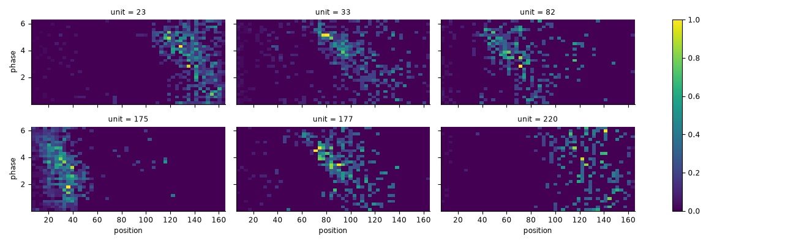
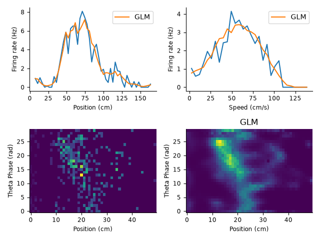

Download
This notebook can be downloaded as 02_03_place_cells_2d_neural_tuning-users.ipynb. See the button at the top right to download as markdown or pdf.
2D neural tuning and model fitting#
This notebook has had all its explanatory text removed and has not been run. It is intended to be downloaded and run locally (or on the provided binder), working through the questions with your small group.
In this series of notebooks, we will review more advanced applications of pynapple; tuning curves, signal processing, and decoding; as well as fitting GLMs to the data using NeMoS. We’ll apply these methods to demonstrate and visualize some well-known physiological properties of hippocampal activity, specifically phase presession of place cells and sequential coordination of place cell activity during theta oscillations.
This series is split into 4 notebooks:
Data wrangling, 1D neural tuning, and model fitting
Signal processing
(This notebook) 2D neural tuning and model fitting
Neural decoding
This notebook assumes you have already gone through the first notebook to explore the data. We’ll reinitialize variables created in the first notebook that will be used here.
import workshop_utils
# imports
import math
import os
import matplotlib.pyplot as plt
import numpy as np
import pandas as pd
import requests
import scipy as sp
import seaborn as sns
import tqdm
import pynapple as nap
# necessary for animation
import nemos as nmo
plt.style.use(nmo.styles.plot_style)
# configure pynapple to ignore conversion warning
nap.nap_config.suppress_conversion_warnings = True
# code needed from first notebook
path = workshop_utils.fetch_data("Achilles_10252013_EEG.nwb")
data = nap.load_file(path)
forward_ep = data["forward_ep"]
position = data["position"].restrict(forward_ep)
lfp = data["eeg"][:,0].restrict(forward_ep)
spikes = data["units"]
speed = np.abs(position.derivative())
good_spikes = spikes[(spikes.restrict(forward_ep).rate >= 1) & (spikes.restrict(forward_ep).rate <= 10)]
place_fields = nap.compute_tuning_curves(good_spikes, position, 50, feature_names=["position"])
speed_fields = nap.compute_tuning_curves(spikes, speed, bins=30, epochs=speed.time_support, feature_names=["speed"])
bin_size = 0.01
neurons = [82, 92, 220]
counts = good_spikes[neurons].count(bin_size, ep=forward_ep)
up_position = position.interpolate(counts)
up_speed = speed.interpolate(counts)
position_basis = nmo.basis.BSplineEval(n_basis_funcs=12, label="position")
speed_basis = nmo.basis.BSplineEval(n_basis_funcs=6, label="speed")
Part 4: 2D neural tuning and model fitting#
Computing 2D tuning curves: position vs. phase#
We can visualize phase precession as a 2D tuning curve over position and phase. We can compute this using the same function as the first notebook, nap.compute_tuning_curves, but now passing features as a 2-column TsdFrame containing the two target features.
First we need the theta phase for our second target feature. We provide the code below for extracting theta phase from the LFP. We do this by: 1) filtering the raw signal to the theta frequency band (6-12Hz), and 2) extracting the phase from the hilbert transform. Both of these steps can be done using pynapple functions (see notebook 2 for a deeper dive into signal processing).
sample_rate = 1250
theta_band = nap.apply_bandpass_filter(lfp, (6.0, 12.0), fs=sample_rate)
theta_phase = nap.compute_hilbert_phase(theta_band)
Now we need to combine position and theta_phase into a TsdFrame. For this to work, both variables must have the same length. We can achieve this by upsampling position to the length of theta_phase using the pynapple object method interpolate.
1. Interpolate position to the time points of theta_phase.#
upsampled_pos =
Now we can combine upsampled_pos and theta_phase into a single TsdFrame. However, since comparing and merging time axes is nontrivial problem, pynapple does not allow us to do this directly. Instead, we need to extract the values from upsampled_pos and theta_phase and stack them together using numpy. Then we can define a new TsdFrame using the 2D feature array which we can use to compute 2D tuning curves.
2. Stack upsampled_pos and theta_phase together into a single TsdFrame#
For stacking arrays, you can use a numpy function like
np.stack.Tip: you may need to transpose to make sure time is in the first dimension of the stacked array
Make sure to name your
TsdFramecolumns"position"and"phase"
# store the resulting TsdFrame into the following variable
features =
3. Use nap.compute_tuning_curves to compute 2D tuning curves for our subselected group of units, good_spikes, over position and phase stored in features.#
Use 50 bins for position and 30 bins for theta phase
tuning_curves =
We can plot 2D tuning curves for each unit and phase precession in some example units.
neurons = [23, 33, 82, 175, 177, 220]
tc_norm = tuning_curves / tuning_curves.max(axis=(1,2))
p = tc_norm.sel(unit=neurons).plot(x="position", y="phase", col="unit", col_wrap=3, size=2, aspect=2)
Figure check

You should be able to notice a negative relationship between position and phase, characteristic of phase precession.
Estimating 2D tuning curves using 2D basis functions#
How can we model 2D tuning curves in a GLM? Similar the first notebook, we can define a 2D basis by using NeMoS basis composition, but instead multiplying two basis objects. In fact, we can use both addition and multiplication together to create arbitrarily complex, multidimensional basis objects.
First, we’ll create a basis object for theta phase, specifically using CyclicBSplineEval. We use this instead of BSplineBasis because the phase angle is a circular variable.
4. Instantiate a CyclicBSplineEval basis object for phase, using 10 basis functions.#
Provide the label
"phase"for the basis.If necessary, reinstantiate the basis objects for position,
position_basis, and speed,speed_basis, as you did in 2.6.
phase_basis =
5. Create the full basis by multiplying position_basis and phase_basis and adding speed_basis.#
full_basis =
Before we can call compute_features, we need to make sure theta_phase has the same number of time points as counts. Since theta_phase has more time points than counts, we’ll need to downsample the number of time points. We can do this using the pynapple object method bin_average. This function will average values within a specified bin size. We can achieve the same sampling rate by using the same bin size as we used for our spike counts.
6. Downsample theta_phase using bin_average and a bin size of 0.01 s.#
bin_theta =
7. Create a design matrix by calling compute_features on full_basis using up_position, bin_theta, and up_speed#
Note:
up_positionandup_speedwere computed in the first notebook and have been redefined above.
X =
Now we have everything we need to fit a GLM and predict the 2D tuning curves from our model.
8. Fit a GLM by doing the following:#
Initialize
PopulationGLMUse the “LBFGS” solver and pass
{"tol": 1e-12}tosolver_kwargs.Fit the data, passing the design matrix
Xand spike countscountsto the glm object.Note:
countswas computed in the first notebook and has been redefined above.
glm =
9. Use predict to calculated the predicted firing rate of our model. Use the predicted rate to compute predicted tuning curves using nap.compute_tuning_curves.#
Remember to convert the predicted firing rate to spikes per second!
Compute 1D tuning curves for position, using 50 and naming the feature
"position".Compute 1D tuning curves for speed, using 30 bins and naming the feature
"speed".Compute 2D tuning curves for position x phase using
predicted_rateand the TsdFramefeatures, using 50 bins for position and 30 bins for phase.
# predict the model's firing rate
predicted_rate =
# compute the 1D tuning curves for position and speed
glm_pf =
glm_speed =
# compute 2D tuning curves for position x phase
glm_pos_theta =
We’ll use a helper function from NeMoS to compare the predicted tuning curves to those computed from the data
from nemos import _documentation_utils as doc_plots
neuron = 82
idx = np.where(glm_pf.unit == neuron)[0][0]
fig = doc_plots.plot_position_phase_speed_tuning(
place_fields.sel(unit=neuron),
glm_pf[idx],
speed_fields.sel(unit=neuron),
glm_speed[idx],
tuning_curves.sel(unit=neuron),
glm_pos_theta[idx],
)
Figure check

Bonus Exercise#
As an bonus, more open-ended exercise, we can investigate all the scientific decisions that we swept under the rug: should we regularize the model? What basis should we use? Do we need all inputs? If you’re feeling ambitious, here are some suggestions to answer these questions:
Try to fit and compare the results we just obtained with different models:
A model with position as the only predictor.
A model with speed as the only predictor.
A model with phase as the only predictor
Introduce L1 (Lasso) regularization and fit models with increasingly large penalty strengths (\(\lambda\)). Plot the regularization path showing how each coefficient changes with \(\lambda\). Identify which coefficients remain non-zero longest as \(\lambda\) increases - these correspond to the most informative predictors.
# enter code here